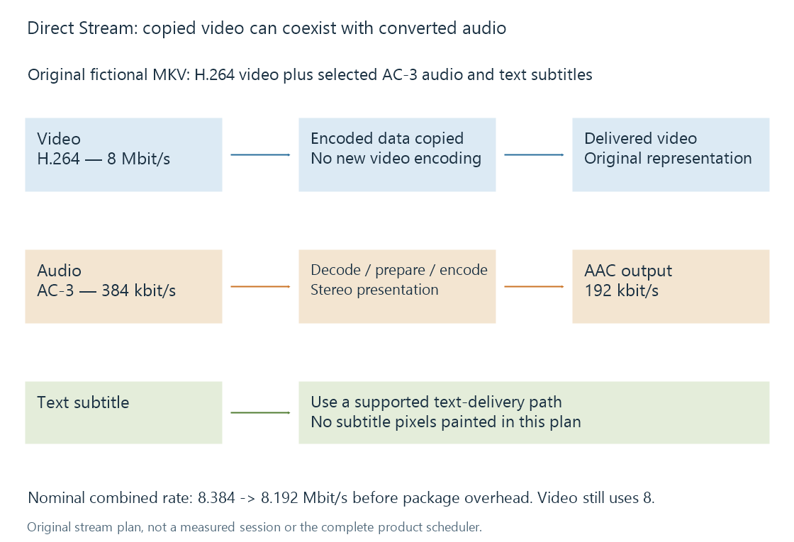

Direct Stream in Emby
Direct Stream preserves the encoded video while adapting delivery packaging or other selected streams to the receiving playback path.
Direct Stream preserves the source's encoded video while adapting something else needed by the playback path. That can be container/delivery packaging, selected audio or subtitle handling.
Emby's mode name and the general technical word transcoding therefore have different scopes. An audio track can be transcoded within a session whose video remains copied and whose product mode is Direct Stream.
A mixed-stream example
Assume a fictional MKV source contains H.264 video at 8 Mbit/s, AC-3 audio at 384 kbit/s and a text subtitle. The target path accepts the video but needs AAC stereo audio and another delivery package.

| Selected component | Operation in this example |
|---|---|
| H.264 video | Copy encoded video into the chosen delivery representation |
| AC-3 audio | Decode, prepare stereo samples and encode AAC |
| Text subtitle | Supply a supported text representation through the chosen subtitle path |
| Container/delivery package | Repackage the selected output streams |
The diagram is an explanatory media plan, not Emby's complete scheduling or selection algorithm.
The video avoids a new video-encoding generation. The audio does not: its encoding and possibly channel presentation change. “No video re-encode” is therefore more precise than “nothing was converted.”
Packaging can change without reconstructing pictures
A muxer writes encoded packets into a supported output container or streaming package. Required bitstream framing or codec configuration can also differ between representations.
Those changes do not necessarily require decoding and re-encoding the pictures. Bitstream filters and stream copying explain that distinction. They also explain why a copy path does not promise complete-file byte equality.
Changing packaging still requires work: access, packet processing, interleaving and output delivery. Direct Stream should not be interpreted as “the server does nothing.”
Audio conversion cannot remove the video's bitrate
If the example's audio changes from 384 to 192 kbit/s, the nominal combined stream rate changes from 8.384 to 8.192 Mbit/s, before any packaging overhead.
That helps with the audio mismatch but leaves the 8 Mbit/s video intact. It cannot create a 6 Mbit/s total representation just by choosing another container or reducing audio.
If a substantially lower video rate is required, another source or video transcode is a different plan.
Process names and stream operations
A server may use the same conversion executable and session infrastructure for remuxing, audio conversion and video encoding. A transcode log or temporary output can therefore exist for a video-copying session.
The useful log evidence is the selected stream mapping and output handling. A video copy operation differs from a named video encoder even when both are launched by the same process.
Emby's public session information separates video and audio handling. Reading those stream-level facts alongside the mode explains the otherwise puzzling combination “Direct Stream, with converted audio.”
See Also
- Remuxing media containers
- Stream copying and encoded packet handling
- Video transcoding in Emby
- Track selection and playback plans
- Subtitle delivery in Emby